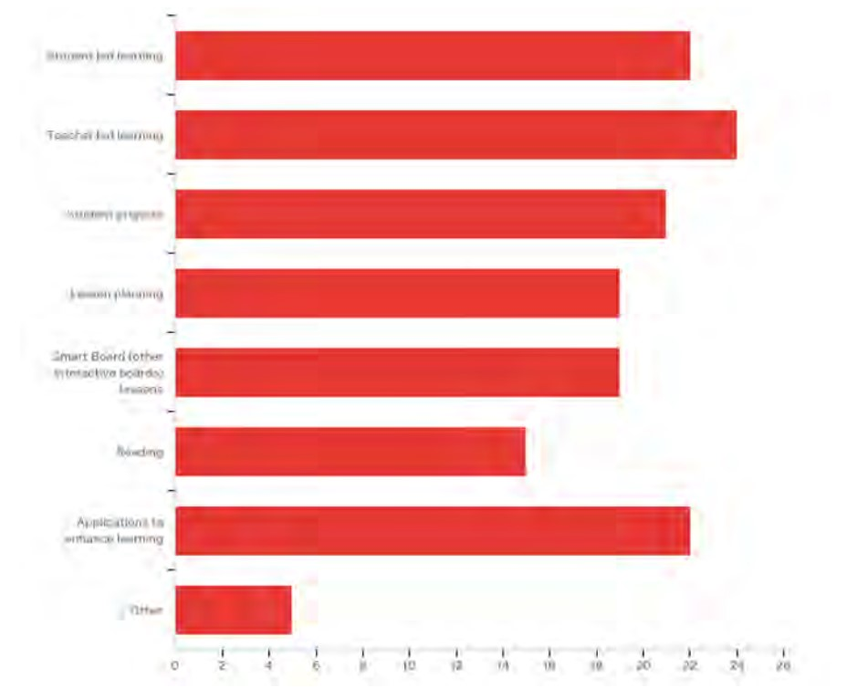
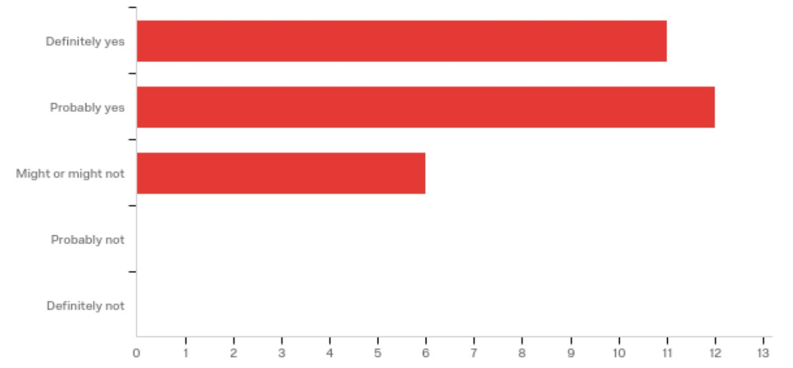
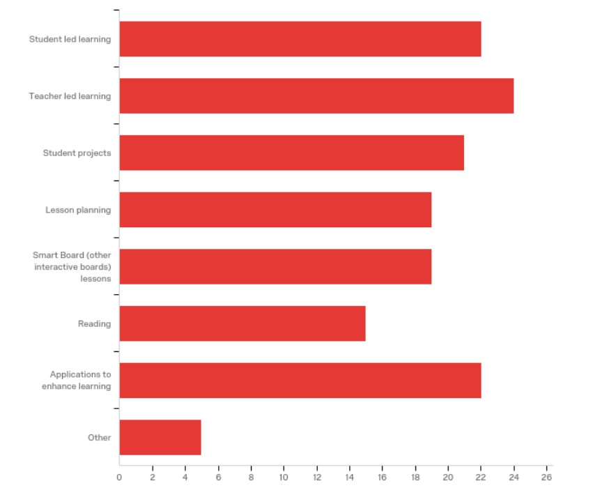

<!DOCTYPE html>
<html lang="en">
  <head>
    <meta charset="UTF-8" />
    <meta name="viewport" content="width=device-width, initial-scale=1.0" />
    <link href="./style.css" rel="stylesheet" type="text/css" />
    <title>itc505/lab/4</title>
  </head>
  <body>
    <section class="title">
      <h1>EFFECTS OF TECHNOLOGY ON STUDENT lEARNING</h1>
      <h5>Kaite J. Carstens</h5>
      <p>
        <i
          >School of Teaching and Learning, College of Education, Illinois State
          University, Normal, IL USA</i
        >
      </p>
      <h5>Jamie M. Mallon</h5>
      <p>
        <i
          >School of Teaching and Learning, College of Education, Illinois State
          University, Normal, IL USA</i
        >
      </p>
      <h5>Mohamed Bataineh</h5>
      <p>
        <i
          >Department of Curriculum and Teaching, The World Islamic Science an
          Education University, Amman, Jordan mohammad.Bataineh@wise.edu.jo</i
        >
      </p>
      <h5>Adel Al-Bataineh</h5>
      <p>
        <i
          >School of Teaching and Learning, College of Education, Illinois State
          University, Normal, IL USA atalba@ilstu.edu</i
        >
      </p>
    </section>
    <section class="abstract">
      <h1>ABSTRACT</h1>
      <p>
        The purpose of this study was to analyze the effects of technology on
        student learning. With the ever-changing world of technology, classrooms
        are gaining more technology and having to incorporate it into student
        learning. Although technology can benefit student learning, it can also
        be detrimental to the educational process. Technology enhances many
        learning opportunities and allows for student comfort but can also be a
        tool that is too heavily relied on and can potentially effect student
        fine motor development and problem-solving skills. In this research
        study, the researchers surveyed to K-12 educators to get feedback on how
        technology effects their classroom. This research helped determine how
        technology effects student learning. The findings showed that more
        training for teachers and students are necessary to better implement
        technology in the classroom. Furthermore, this research pointed out that
        students are more engaged and comfortable with technology, yet they can
        become a management concern.
      </p>
      <h1>KEYWORDS:</h1>
      <p>
        Technology effects, Student learning, Motivation, Problem solving, Fine
        motor skills
      </p>
      <h1>INTRODUCTION</h1>
      <p>
        Today’s youth are growing up in a time where technology is constantly at
        their fingertips. The growing world of social media applications and
        internet sites spike interest in children. Additionally, cell phones,
        computers, tablets, free Wi-Fi, gaming systems, and electronic-based
        toys are all the rage in today’s society. Students are growing up in a
        time when technology is a competitive fad. According to Klopfer, et al.
        (2009), “Every day, many students are spending countless hours immersed
        in popular technologies—such as Facebook, MySpace, World of Warcraft, or
        Sim City” (p. 1). In today’s classroom, technology is becoming a more
        prominent form of learning. With the ever-changing world of technology,
        teachers work hard to incorporate technology into their everyday
        instruction in order to connect student passion with learning. According
        to Harris (2016): Today’s educators are under great pressure to provide
        21st century students with a quality education based on 21st century
        standards. Those standards include providing students with the
        technological and informational skills needed to compete in an
        ever-changing, technology-driven world (p. 27).
      </p>
      <p>
        Educators are constantly looking for the technological tools that are
        going to enhance the learning of their students. However, technology has
        been viewed as a great resource in classrooms that has heightened
        learning but has its negative effects on student learning. With new
        information technology, education is fast becoming free of time and
        space. But every learner still needs to be connected to a scaffold of
        support for lifelong learning achievement. Students need parents,
        friends, and supervisors who are also teachers and coaches. The primary
        function of the school-to-work movement is to mobilize understanding and
        support so that students will acquire the skills, habits, values, and
        understandings essential to productivity in all the roles of life (Hakim
        et al. 2000, p. 263).
      </p>
      <p>
        Technology is an important part of students’ lives. Incorporating
        technology into the classroom has proved to be beneficial yet also has
        some drawbacks. Technology has helped student willingness and engagement
        and allows for the enhancements of learning. According to Fisher, et al.
        (2014), “The need for construction and engagement means that the best
        types of learning will be those that involve choices that the student
        can make, and learning where there are meaningful contexts where the
        student is engaged” (p. 5). But is this enough to outweigh some of the
        negatives? In a study conducted by Sülzenbrück, et al. (2011) that
        examined the effect computer use has on motor skills, they discovered
        that using modern technology could effect changes in basic psychomotor
        and cognitive skills. This includes using tools such as computers,
        electronic organizers, navigation systems, etc. This can cause concerns
        in student growth in the classroom. Furthermore, research also shows
        some pros and cons and goes in depth into why technology may or may not
        be beneficial.
      </p>
      <p>
        The purpose of this study was to examine K-12 educators’ perceptions
        regarding the use of technology devices in the classroom, the benefits
        and drawbacks of the use of technology in education, and particularly
        the impact on students’ learning. For the purpose of this study,
        technology included only educational technology, i.e. internet and
        computer-mediated tools. It is important to understand the impact of
        technology on student learning because it can significantly impair or
        empower the learner. This study was intended to help educate teachers on
        best practices in the classroom. Students can benefit from instruction
        that is aimed to help them achieve success. Parents of students can
        discover how technology impacts their child’s learning. The findings
        from this study will contribute to existing knowledge on technology
        incorporation in classroom settings.
      </p>
      <h1>LITERATURE REVIEW</h1>
      <p>
        While technology has become increasingly more popular in classrooms,
        there is a concern that students are relying too heavily on technology.
        While technology can be a great tool, are students prepared to problem
        solve technology related issues?
      </p>
      <p>
        With the use of technology, some teachers are adopting the flipped
        classroom approach. This allows students to study the material at home
        and come to school to engage in more discussions, exercises, and
        activities. According to Song and Kapur (2017), “few studies have
        reported how to develop students’ problem solving skills and enhance
        their conceptual understanding in flipped classroom in mathematics
        inquiry” (p. 293). While in this setting, students are learning more on
        their own, they are missing out on some of that lecture time that can
        spark deep conversation on problems. This article looks at the different
        benefits and concerns of a flipped classroom.
      </p>
      <p>
        Fisher, et al. (2014) discuss how classrooms are turning to technology
        for teaching and learning, and how teacher’s roles have changed. The
        teacher becomes the facilitator, who takes the students on their
        learning journey, learning with them instead of ‘teaching’ them.
        Students needs to make judgements about and be able to calculate the
        value of the content they gather. Learners are also self-assessing using
        technology. This helps to “move learners from being the consumers of
        information to being producers of it” (p. 11).
      </p>
      <h1>FINE MOTOR SKILLS</h1>
      <p>
        With more integration of technology, the effect it has on fine motor
        skills is questionable. Some research has dug into this topic, but it is
        still fairly undiscovered. Purcell, et al. (2013) provide a
        comprehensive report about social media’s impact on writing. Students
        and teachers talk about what they consider writing to be. Teachers also
        discuss how social media has been helpful and harmful to classroom
        writing. Teachers “encourage their students to do at least some writing
        by hand...because they feel students do more active thinking,
        synthesizing, and editing when writing by hand, and writing by hand
        discourages any temptation to copy and paste others’ work” (p. 6). Due
        to social media, students are able to write collaboratively, share their
        work with more people, and be more creative in their writing.
      </p>
      <p>
        Sulzenbruck, et al. (2011) indicate “there are indeed specific
        differences in basic fine motor skills depending on the amount of time
        spent typing and handwriting texts” (p. 250). Their study does not only
        focus on handwriting but fine motor skills in general. Computer use also
        has in impact on major behavioral requirements.
      </p>
      <h1>MOTIVATION</h1>
      <p>
        As teachers, it is our number one priority to motivate students in their
        learning. The more motivated students are to learn something new, the
        more likely the student is to retain the material. Research shows that
        while growing up in the ever-growing technology world, the incorporation
        of technology helps motivate students to learn. For example, Schaen, et
        al. (2016), discuss a project they conducted that allowed third grade
        leaders and first graders to work together and create an app that will
        allow kindergarteners to practice math strategies. This weeklong project
        allowed students to use technology, collaborate, and teach. Schaen, et
        al. study discussed the process that the students went through and the
        outcomes of the project. This technology enhanced project motivated
        students who wanted to continue building and working at home. “The
        project gave young students a real-world purpose for planning and
        creating collaboratively” (p. 509).
      </p>
      <p>
        In another study, Millar (2013) focuses on motivating students in the
        classroom and how this can be a difficult task. Using technology is,
        “like giving each student their own smartboard” (para. 3). They can show
        what they know, and teachers can be comfortable knowing learning is
        occurring. The use of technology allows all students the opportunity to
        participate, “It's hard to be honest when you have to put your hand up
        in front of the room” (p. 2).
      </p>
      <p>
        Similarly, Heafner (2004) discusses how technology allows students to
        search and find information easily and has “helped them understand what
        they were talking about in class” (para. 22). This supports the learning
        happening in class. They feel proud to share their work and knowledge
        mastered via technology. Students also feel confident in using
        technology and completing tasks. The confidence helps them establish
        motivation in their learning.
      </p>
      <h1>EXPANDING LEARNING</h1>
      <p>
        According to many educational sources, there are many ways to expand and
        enhance student learning through the incorporation of technology. Bitner
        and Bitner (2002), have spent years working with teachers and technology
        and synthesized eight different areas that seem to help with teacher
        integration. Their article focuses on the following eight areas:
      </p>
      <ol>
        <li>Fear of Change</li>
        <li>Training in basics</li>
        <li>Personal use</li>
        <li>Teaching models</li>
        <li>Learning based</li>
        <li>Climate</li>
        <li>Motivation</li>
        <li>Support</li>
      </ol>
      <p>
        The article then goes into more detail on each of the areas and
        discusses why these areas are important to integrating technology into
        the classroom. Once these areas are met, integration of technology can
        best help students in expanding their learning.
      </p>
      <p>
        In another study, Klopfer, et al. (2009) discussed how students are
        growing up and are completely normalized by digital technologies (p. 1).
        The study explained that “many students in this group are using new
        media and technologies to create new things in new ways, learn new
        things in new ways, and communicate in new ways with new
        people-behaviors that have become hardwired in their ways of thinking
        and operating in the world” (p. 1-2). While there is much resistance to
        incorporating technology, “there are countless examples of these
        technologies demonstrating their educational value to other industries,
        confirming the powerful learning opportunities and advantages they
        afford” (p. 2). While determining the effects technology has in our
        classrooms, Klopfer, et al. strongly believe that the incorporation of
        technology makes the classroom stronger. They argue that “undoubtedly,
        without these recent technologies (i.e. digital games, Web 2.0, etc.) in
        the classroom, strong lessons can still be achieved, but there’s a sharp
        disconnect between the way students are taught in school and the way the
        outside world approaches socialization, meaning-making, and
        accomplishment” (p. 3).
      </p>
      <p>
        Shivakumar and Manichander (2013) discuss education within the 21st
        century and how that technology is a powerful tool for students. They
        emphasized collaborating with one another and incorporation of blended
        learning, as well as information and communication technologies (ICT).
        “ICT refers to technologies that provide access to information through
        telecommunications” (p. 21). In using ICT in education, teachers are
        able to familiarize themselves with technology and some of the issues
        that arise (p. 21). This paper goes on to discuss different forms of ICT
        and how they benefit the classroom.
      </p>
      <h1>METHODOLOGY</h1>
      <p>
        The researchers utilized a mixed method approach to understanding how
        the integration of technology affected students’ learning. A survey was
        developed and administered through Qualtrics to collect data. The survey
        contained 14 questions that utilized a variety of questions formats such
        as open-ended, multiple choice, and Likert scale. Plano, et al. (2010)
        describe the survey research design process as being fairly flexible.
        The researchers utilized this approach and synthesized trends revealed
        by the data. The survey was sent to K-12 educators at a local school
        district in central Illinois. Participation was voluntary. The data was
        analyzed using descriptive statistics such as means, standard deviation,
        and percentages. Qualitative data was analyzed and organized into
        emerging themes. The quantitative and qualitative data was triangulated
        to help answer the research questions.
      </p>
      <p>The study was intended to answer the following research questions:</p>
      <ol>
        <li>
          What are the teachers’ general views regarding the use of technology
          in teaching and learning?
        </li>
        <li>
          What are teachers’ perspectives regarding the impact of technology use
          on student learning?
        </li>
        <li>
          What are teachers’ thoughts regarding other positive and negative
          outcomes of incorporating technology in the classroom?
        </li>
      </ol>
      <h1>RESULTS</h1>
      <p>
        The purpose of the study was to better understand how the effect of
        technology in the classroom is helping or harming our students. In
        general, data shows that the participants seem to view technology as a
        tool that enhances learning and engages students. They pointed out that
        technology is used for a variety of purposes. Figure 1 shows the
        breakdown of how teachers utilize technology in their classroom.
      </p>
      <div>
        

        <p>Figure 1- How teachers utilize technology in the classroom</p>
      </div>
      <p>
        Teachers using technology state that the majority of their time spent on
        technology is geared at teacher led learning. This includes using the
        smart board for teaching lessons and other applications to help enhance
        student learning. A small portion of teacher technology time was spent
        on lesson planning and communication. Teacher participants reported that
        students also took more interest in learning when it involves
        technology. The teachers stated that technology is used by students for
        projects and creations, collaboration with peers or adults, reading, and
        other applications to enhance learning such as math centers.
      </p>
      <p>
        In determining the teachers’ general views regarding the use of
        technology in teaching and learning, the researcher wanted a better idea
        of the time spent using technology district wide. Figure 2 shows the
        amount of time students engaged in technology daily. Teachers report
        that students in the districts spend mainly thirty minutes or less a day
        engaged in technology. The choices count and percentages for the minutes
        per day that students were engaged in technology were as follows: 0-30
        minutes a day was 12 (41.38%); 30-60 minutes a day was 7 (24.14%); 60-90
        minutes a day was 7 (24.14%); 90-120 minutes was 2 (6.90%); more than
        120 minutes a day was 1 (3.45%). The total count was 29.
      </p>
      <div>
        
        <p>Figure 2. Minutes per day that students engage in technology.</p>
      </div>
      <p>
        When asked if the classroom has a designated handwriting block, 72.41%
        of the teachers responded with no. Of the teachers that have a
        handwriting block, they spend around 15 minutes on average daily.
        Teachers stated that they need more access to devices (1:1 (one to one
        technology), chromebooks, iPads, computers) in order to be successful in
        implementing technology in their classrooms. They also feel time is a
        necessary resource as well. Time is needed to do research on available
        platforms, websites, applications, and learning tools that would be
        beneficial for students. Time and money are required for training
        teachers on how to use and implement the available technology. Time is
        also a factor for educators to teach their students how to use
        technology accurately and efficiently. Lastly, the teachers said they
        need “problem solving methods for technology problems.” When asked, “If
        technology fails or is unavailable, are your students familiar with
        other research/learning methods…?” almost sixty-nine percent of teachers
        said that their students were capable of using alternate methods to find
        answers to their questions or gather research.
      </p>
      <p>
        The availability of technology varies across the district. Some
        classrooms are at, or close to 1:1, while others have many students and
        few devices. It was also mentioned that some classes share technology or
        technology space. The district has implemented a Bring Your Own Device
        (BYOD) program in grades five through twelve. Within the school
        district, there is a wide range of technology being utilized on a daily
        basis. In reviewing survey data, there were many teachers that shared
        their positive outcomes when it comes to technology, as well as the
        negatives.
      </p>
      <p>
        The usage of technology in the classroom comes with its many perks
        according to teachers in the district. With the inclusion of technology
        in the district, we are opening our students up to so much more
        information than we could do with the resources within our classrooms.
        Technology is how kids learn in the world today and it is what they feel
        most comfortable using. Technology provides a high student interest,
        allowing them to engage in their learning at multiple levels. With the
        growing amount of technology, teachers feel that students have a good
        deal of choices when studying and allows them to be self-sufficient
        learners in and out of the classroom.
      </p>
      <p>
        With enough current and reliable technology, it can greatly affect the
        way in which students interact and learn within the classroom setting.
        The survey asked teachers to share their top three technology sources
        that they utilize in the classroom. Survey results showed a large range
        in the top three technology resources that are used district wide to
        enhance student learning, as well as teacher growth and planning. These
        resources and interactive games allow for high interest learning, while
        allowing teachers to differentiate material when needed. With the
        students’ excitement and willingness to engage with technology, they are
        able to access these resources to help them be more successful,
        enthusiastic learners. Within school settings, there are a variety of
        different learners. Some students need the extra challenge, some need
        the extra academic support, and others may need technology to help them
        with everyday skills. The use of technology allows students with
        disabilities the opportunity to utilize speech to text software. This
        allows students who are more successful at verbalizing their thoughts
        the opportunity to work on developing their writing and speech skills.
        The inclusion of technology at station time allows students the
        opportunity for intervention or enrichment.
      </p>
      <p>
        As there are many positive outcomes to technology in the classroom,
        there are some negative outcomes as well. While technology gives
        students more information at a quick pace, there’s also so much
        information that is incorrect or not appropriate for school. This could
        make it difficult for teachers to monitor. One of the top complaints of
        technology in the classroom is that it just doesn’t seem to work at the
        time you need it to work and we are “at the mercy of the server.” The
        technology in the classroom is not always responsive and the Wi-Fi
        doesn’t always work. In reviewing the survey results, the teachers are
        most frustrated in technology when it does not function correctly. One
        response shared how having technology issues during the day results in a
        delay in teaching time.
      </p>
      <p>
        Some teachers feel that the use of technology becomes more of a
        management concern. “The time it takes to get students logged in and
        logged out during a station that is 15 minutes long” ends up taking up
        half of the station. With the amount of time it takes, it can cause
        distractions. “Students will find ways to be distracted by the device
        they are using, such as doing random google searches during work time.”
        One response shared that, “technology has a tendency to increase
        distraction and dishonesty in some students.”
      </p>
      <p>
        One of the final negative effects of technology is the availability of
        technology and the need for more staff and student training on these
        devices. Teachers want to make sure students know where to go and what
        to do so that instructional time is not being interrupted. With students
        that need more guidance with technology, there is not much teacher time
        throughout the day to support them. One participant shared that their
        confidence in technology is not high and knows that there is more that
        they could be doing in the classroom with technology to enhance student
        learning.
      </p>
      <p>
        While it is not stated whether or not teachers believe it is a positive
        or negative impact, 79.31% of teachers believe that students probably or
        definitely rely heavily on technology. Figure 3 shows how heavily
        teachers feel students rely on technology. Many students are relying on
        technology, but teachers believe that with this heavy reliance, 68.97%
        of students are familiar with other forms of research/learning models,
        such as dictionaries, nonfiction texts, alternative games, or exercises.
      </p>
      <div>
        
        <p>Figure 3- Student reliance on technology</p>
      </div>
      <h1>DISCUSSION</h1>
      <p>
        The purpose to the research study was to determine the effects that
        technology has in the classroom. The questions asked through the given
        survey were meant to provide information to answer the following
        questions:
      </p>
      <ol>
        <li>
          What are the teachers’ general views regarding the use of technology
          in teaching and learning?
        </li>
        <li>
          What are teachers’ perspectives regarding the impact of technology use
          on student learning?
        </li>
        <li>
          What are teachers’ thought regarding other positive and negative
          outcomes of incorporating technology in the classroom?
        </li>
      </ol>
      <p>
        The data shows that 62.07% of the participants were Elementary teachers.
        Figure 4 shows the different ways teachers utilize technology. p>
      </p>
      <div>
        
        <p>Figure 4- How teachers utilize technology in the classroom</p>
      </div>
      <p>
        The participants also reported using technology for communication and
        collaboration among peers, students, and parents. They also administer
        testing, create art, and use it for math centers. Bitner and Bitner
        (2002), explained that once the eight keys to success are followed,
        technology is the best way to help students’ growth. Three of the eight
        keys to success are personal use, teaching models, and learning based.
        Looking at the results in figure 4, teachers are sharing their personal
        use in technology, such as lesson planning. Teachers are providing
        different teaching models and ways of learning by using teacher led
        learning, student led learning, student projects, etc.
      </p>
      <p>
        Figure 4 shows that teachers are utilizing technology in the classroom
        for student led learning and student projects. This is further supported
        by Klopfer et al. (2009). They stated, “many students in this group are
        using new media and technologies to create new things in new ways, learn
        new things in new ways, and communicate in new ways with new
        people-behaviors that have become hardwired in their ways of thinking
        and operating in the world” (p. 1-2). This supports the importance of
        and need for more student access to technology.
      </p>
      <p>
        When participants were asked if they feel that their students rely
        heavily on technology, figure 3 shows that there is more of a reliance
        on technology than not. A study by Purcell et al (2013) shared that
        teachers, “encourage their students to do at least some writing by
        hand...because they feel students do more active thinking, synthesizing,
        and editing when writing by hand, and writing by hand discourages any
        temptation to copy and paste others’ work” (p. 6). This article
        discusses the importance of handwriting. With newer technology, students
        spend more time typing than before, that can affect student’s fine motor
        skills. Sulzenbruck et al. (2011) indicate “there are indeed specific
        differences in basic fine motor skills depending on the amount of time
        spent typing and handwriting texts” (p. 250). Survey results showed that
        72.41% of educators do not have a designated handwriting block, which
        can affect student fine motor skills.
      </p>
      <p>
        The participants were asked to share their feelings regarding the
        positive and negative impacts that technology has on students or their
        learning. Many participants shared that students are more engaged and
        motivated in their work when technology is involved. This supports one
        of Bitner and Bitner’s (2002) eight keys to success. The motivation for
        teachers and students to want to use the technology helps enhance their
        learning. The participants also shared that the students are comfortable
        with the use of technology in their learning. Today’s students have
        grown up in a digital community. Student have had a large range of
        technology experiences. Using technology allows them more comfort in
        their learning. Erin Millar (2013) explained that , “It’s hard to be
        honest when you have to put your hand up in front of the room” (p. 2).
        This allows for all students to feel safe while participating.
      </p>
      <p>
        When asked what some of the biggest problems were with technology
        implementation, some teachers shared that they feel more technology
        training would be beneficial for their students and themselves. Some
        teachers also shared that they do not have much confidence when it comes
        to technology. In referring back to the eight keys to success, Bitner
        and Bitner (2012) stated that how fear of change and training are
        important for student success in technology.
      </p>
      <h1>CONCLUSION</h1>
      <p>
        The findings of this study show that there are many positive and
        negative aspects of technology use in the classroom. Although looking
        through survey results, teachers did share more positive impacts of
        technology than negative. There were areas that teachers felt like they
        could use more support, but that they felt that student motivation and
        engagement were higher with the use of technology in the classroom.
        Moving forward, teachers would benefit from more personal training on
        implementing the technology in the classroom so that they feel more
        comfortable with the inclusion of technology. Educators also felt that
        students need more training with the provided technology to help promote
        more independence. The researchers believe that there needs to be more
        research completed to determine the effects technology has in the
        classroom.
      </p>
      <h1>REFERENCES</h1>
      <p>
        Adams, S. C. (2016). Improving teacher comfort levels and self-efficacy
        with technology integration and application of technology into the
        elementary education curriculum through the tech buddy program (Order
        No. 10120866). Available from ProQuest Dissertations & Theses Global.
        (1806807464). Retrieved June 5, 2020, from
        http://libproxy.lib.ilstu.edu/login?url=http://search.proquest.com.libproxy.lib.ilstu.edu/docview/180680
        7464?accountid=11578
      </p>
      <p>
        Ahmed, K., & Nasser, O. (2015). Incorporating iPad Technology: Creating
        More Effective Language Classrooms. TESOL Journal,6(4), 751-765.
        doi:10.1002/tesj.192.
      </p>
      <p>
        Autio, O. O. (2016). Changes in attitudes toward craft and technology
        during the last 20 years. Journal of Technology Education, 28(1), 53-70.
      </p>
      <p>
        Bitner, N., Bitner, J. (2002). Integrating technology into the
        classroom: eight keys to success. Journal of Technology and Teacher
        Education, 10 (1), 95-100.
      </p>
      <p>
        Bitter, G. G., & Pierson, M. (2005) Using technology in the classroom.
        Boston: Pearson.
      </p>
      <p>
        Corkett, J.K., & Benevides, T. (2016). iPad versus handwriting: pilot
        study exploring the writing abilities of students with learning
        disabilities. Journal of International Special Needs Education, 19(1),
        15-24.
      </p>
      <p>
        Costabile, A., Spears, B. (Eds.) (2012) The impact of technology on
        relationships in educational settings. Abingdon, Oxon.; New York, NY:
        Routledge, 2012.
      </p>
      <p>
        Eyyam, R., & Yaratan, H. S. (2014). Impact of use of technology in
        mathematics lessons on student achievement and attitudes. Social
        Behavior & Personality: An International Journal, 4231-42.
        doi:10.2224/sbp.2014.42.0.S31
      </p>
      <p>
        Fisher, A., Exley, K., & Ciobanu, D. (2014). Using technology to support
        learning and teaching. London: Routledge, Taylor & Francis Group.
      </p>
      <p>
        Gardner, D. (2013). Motivating pre-service teachers to incorporate
        technology into the classroom (Order No. 3691044). Available from
        ProQuest Dissertations & Theses Global. (1667457129). Retrieved July 14,
        2020, from
        http://libproxy.lib.ilstu.edu/login?url=http://search.proquest.com.libproxy.lib.ilstu.edu/docview/166745
        7129?accountid=11578
      </p>
      <p>
        Harris, C. J. (2016) The effective integration of technology into
        schools’ curriculum. Distance Learning, (2), 27.
      </p>
      <p>
        Heafner, T. (2004). Using technology to motivate students to learn
        social studies. Contemporary Issues in Technology and Teacher Education
        [Online serial], 4(1). Retrieved July 20, 2020, from
        http://www.citejournal.org/volume-4/issue-1-04/social-studies/using-technology-to-motivate-students-to-learn-social-studies
      </p>
      <p>
        Klopfer, E., Osterweil, S., Groff, J., & Hass, J. (2009). The
        instructional power of digital games, social networking, simulation, and
        how teachers can leverage them. The Education Arcade, 1-21. Retrieved
        August 10, 2020, from
        http://education.mit.edu/wp-content/uploads/2015/01/GamesSimsSocNets_EdArcade.pdf
      </p>
      <p>
        Lisy, J. G. (2015, January 9). Examining the impact of technology on
        primary students' revision of written work. Online Submission. Retrieved
        August 24, 2020, from http://files.eric.ed.gov/fulltext/ED568695.pdf.
      </p>
      <p>
        Millar, E. (2013). The pros and cons of digital classrooms. Globe & Mail
        (Toronto, Canada).
      </p>
      <p>
        Plano Clark, V. L. & Creswell, J. W. (2010). Understanding research: A
        consumer’s guide. Upper Saddle River, NJ: Pearson.
      </p>
      <p>
        Purcell, K., Buchanan, J., & Friedrich, L. (2013, July 16). The Impact
        of Digital Tools on Student Writing and How Writing is Taught in Schools
        (Rep.). Retrieved September 2, 2020, from Pew Research Center website:
        http://www.pewinternet.org/files/old-media/Files/Reports/2013/PIP_NWP%20Writing%20and%20Tech.pdf.
      </p>
      <p>
        Rashid, T., & Asghar, H. M. (2016). Full length article: Technology use,
        self-directed learning, student engagement and academic performance:
        Examining the interrelations. Computers in Human Behavior,
        63604-612.doi:1016/j.chb.2016.05.084.
      </p>
      <p>
        Record, M. (2015). Implications of graphic organizers in an age of
        social media. New Directions for Teaching & Learning, 2015(144), 73-86.
        doi:10.1002/tl.20164.
      </p>
      <p>
        Ribble, M. (2011). Digital Citizenship in schools. International Society
        of Technology in Education [ISTE].
      </p>
      <p>
        Shaen, R. J., Hayden, G., & Zydney, J. M. (2016). “Now” We Have an App
        for That. Teaching Children Mathematics, 22(8), 506-509.
      </p>
      <p>
        Shivakumar, G. S., & Manichander, T. (2013). Restructuring the Future
        Classroom- A Global Perspective. Imanager’s Journal on School
        Educational Technology, 9(2), 19-24. doi:
        http://files.eric.ed.gov/fulltext/EJ1098303.pdf.
      </p>
      <p>
        Song, Y., & Kapur, M. (2017). How to Flip the Classroom – “Productive
        Failure or Traditional Flipped Classroom” Pedagogical Design?
        Educational Technology & Society, 20 (1), 292–305.
      </p>
      <p>
        Starkey, L. (2012). Teaching and learning in the digital age. New York,
        N.Y. : Routledge, 2012.
      </p>
      <p>
        Sulzenbruck, S., Hegele, M., Rinkenauer, G., Heuer, H. (2011). The death
        of handwriting: secondary effects of frequent computer use on basic
        motor skills. Journal of Motor Behavior, 43(3), 247-251.
        doi:10.1080/00222895.2011.571727.
      </p>
      <p>
        Varol, F. (2013). Elementary School Teachers and Teaching with
        Technology. Turkish Online Journal of Educational Technology- TOJET,
        12(3), 85-90.
      </p>
      <p>
        Wankel, L.A., Blessinger, P. (Eds.) (2013) Increasing student engagement
        and retention using multimedia technologies video annotation, multimedia
        applications, videoconferencing and transmedia storytelling. Bingley, UK
        : Emerald.
      </p>
      <p>
        Wilson, A. (2014). Elementary teachers in rural schools: Perceptions and
        use of technology in the classroom (Order No. 3683716). Available from
        ProQuest Dissertations & Theses Global. (1658786307). Retrieved
        September 14, 2020, from
        http://libproxy.lib.ilstu.edu/login?url=http://search.proquest.com.libproxy.lib.ilstu.edu/docview/165878
        6307?accountid=11578.
      </p>
      <p>
        Winner, D. G. (2012). The self-efficacy of the elementary teacher toward
        technology use (Order No. 3525444). Available from ProQuest
        Dissertations & Theses Global. (1039543880). Retrieved September 21,
        2020, from
        http://libproxy.lib.ilstu.edu/login?url=https://search-proquestcom.libproxy.lib.ilstu.edu/docview/1039543880?accountid=11578.
      </p>
      <p>
        Yehle, A. K. (2000). Technology use, reasons for technology use, and
        impacts of technology use: A case study of preservice student teachers
        in the area of emotional disturbance (Order No. 9996907). Available from
        ProQuest Dissertations & Theses Global. (304646311). Retrieved October
        5, 2020, from
        http://libproxy.lib.ilstu.edu/login?url=https://searchproquestcom.libproxy.lib.ilstu.edu/docview/304646311?accountid=11578.
      </p>
      <p>
        Yokuş, G., & Yelken, T. (2017). The Adoption of mobile devices as
        digital tools for seamless learning. Turkey: Mersin University.
        doi:10.4018/978-1-5225-1692-7.ch015.
      </p>
    </section>
  </body>
</html>
